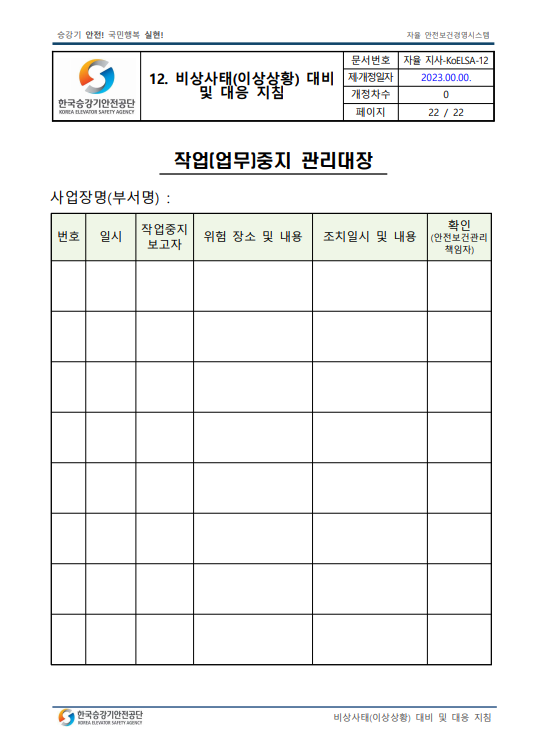
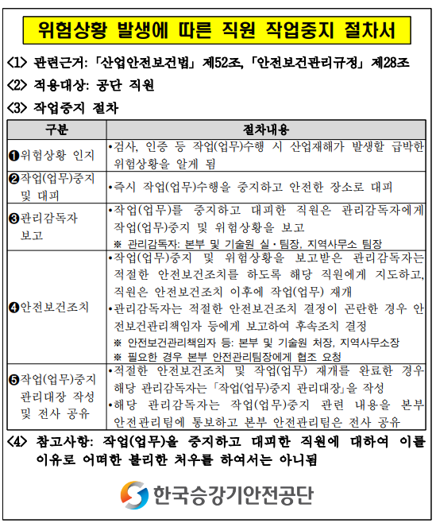

Q1)
2024년 상반기 중대재해훈련 방식?
A1) 작년(2023년)과 비교해 토론형 방식으로 변경되었습니다. 훈련상황 시나리오를 작성해서 대본을 만들어 역할극을 한다고 생각하시면 됩니다. 하반기 훈련은 작년처럼 현장(실습)훈련으로 진행합니다.
Q2)
(붙임3)중대재해 발생 대응훈련 평가표 중 8번 '작업중지 관리대장'은 뭔가요?
A2) 자율 안전보건경영시스템 운영문서 중 12번
'비상사태 대비 및 대응 지침' pdf파일 23페이지에 있습니다.

Q3)
작업중지 관리대장은 언제 쓰는거죠?
A3) 검사 중 위험상황 발생 시 작업(업무)수행을 중지하고 적절한 안전보건조치 및 작업(업무) 재개를 완료한 경우 해당 관리감독자(지역사무소 팀장)가 작성합니다. 상세 절차는 아래 첨부사진 참고 바랍니다.
